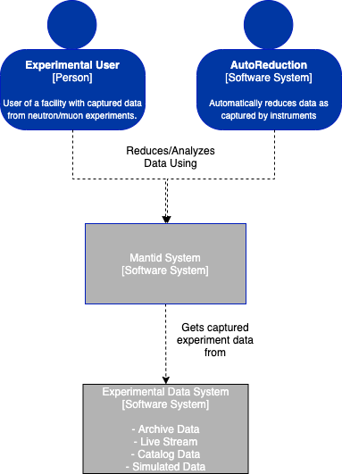
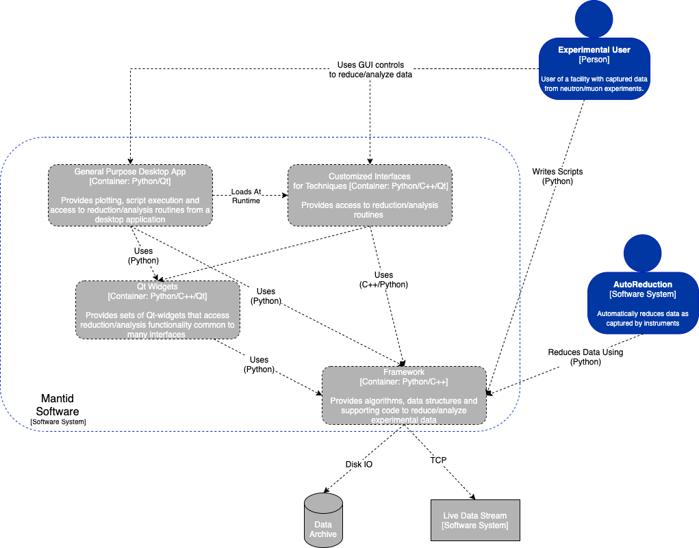
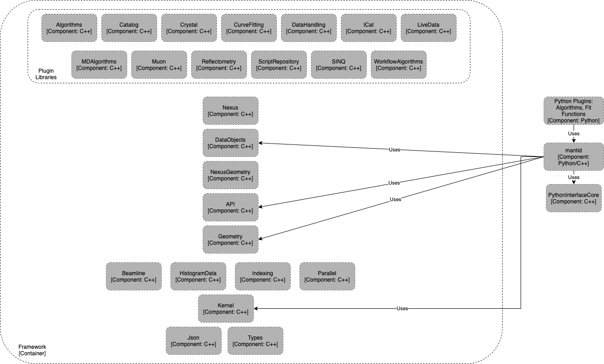
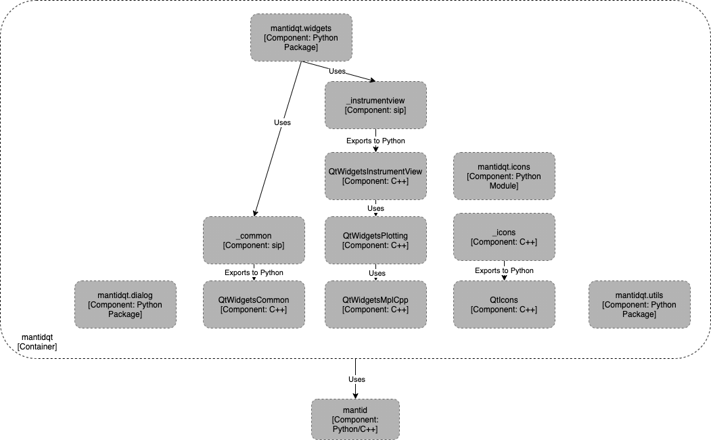
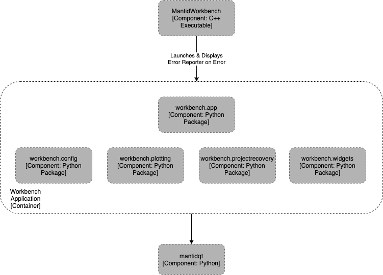

Architecture#
Summary#
Mantid is used for reduction, analysis & visualization of neutron and muon data. This document describes the architecture of the mantid software in terms of the C4 model.
Context#
People and other systems interact with the Mantid software package as decribed by the following context diagram.

Context diagram for mantid software#
Experimental users at neutron/muon facilities use the software to reduce/analyze their captured data. Mantid uses existing experimental data access systems to retrieve users’ data for processing either
interactively via Python scripts or a GUI
automatically via programmatic access from other systems such as automated reduction systems.
Container#
Please note that container here does not mean container in the deployment (Docker, Singularity) sense of the word, rather the generic definition of enclosing something.
The mantid software system is defined as four containers:
two libraries (framework & mantidqt),
one general-purpose, cross-platform, graphical desktop application and
many customized graphical interfaces for specific scientific techniques.
This is illustrated, along with connections between the containers,
in the following diagram.
{kind=link}

Container diagram for mantid software#
The workbench application is written in Python/Qt that provides access
to the business logic for reducing/analyzing data within the framework.
Along with this it provides access to a range of visualization features
defined within the mantidqt library - A Python/Qt library of custom
widgets that are composed to form the workbench application.
This library is accessible outside of the workbench application to allow
custom applications to be built from the widgets.
Please note the directional aspect of the connection/dependency arrows. The connections are strictly one way and those earlier in the dependency chain cannot contain dependencies on those later, e.g.
framework does not depend on
mantidqtorworkbenchmantidqtdoes not depend onworkbenchbut does depend onframework
Components#
The following subsections describe each of the containers within the system in more detail.
Framework#
The Framework refers to the data structures, algorithms
and supporting modules that live within the Framework directory
of the source tree - commonly referred to as “framework code”.
This part of the system is written in C++ and provides the business logic
for reducing and analysing data independent of a graphical environment.
The modules that compose the framework are shown within the following
component diagram.
{kind=link}

Container diagram for mantid framework#
The framework is separated into a base set of libraries that provide that core functionality e.g. workspace objects, instrument objects, algorithm interfaces, along with a set of plugin libraries that are loaded at runtime to register new capabilities such as algorithms for data treatment.
A Python package to the C++ libraries, called mantid, is defined in
Framework/PythonInterface and
gives access to the C++-framework code from Python.
The Python package is the primary mode of access to the C++ libraries
for external entities.
Assuming Python paths have been setup correctly, the mantid package
is to be treated like any other package and can be used in vanilla
Python or any interactive Python environment,
including Jupyter notebooks.
While the C++ API could be used directly by external parties this is not a supported method of interaction and API stability of the C++ layer is not guaranteed.
mantidqt#
{kind=link}

Container diagram for mantidqt Python package#
mantidqt is a Python package defined to house a collection of Qt widgets
that sit on top of mantid functionality.
They provide a reusable set of widgets that can be used across multiple
interfaces to give a consistent user experience when presenting given
mantid functionality to users. One example of such a widget is the
mantidqt.widgets.filefinder, which sits on top of the framework
FileFinder, and presents GUI elements to pass through and run the
the framework logic.
Providing a reusable widget gives a consistent user experience across
multiple interfaces/applications when displaying mantid features to users.
The package contains basic widgets, such as the aforementioned filefinder,
but also more advanced widgets such as
slice viewer and
the OpenGL-based instrument viewer,
which combine many features of the framework together to provide advanced
visualization to users.
The package contains a mixture of C++ and Python code.
It is defined in the qt/python/mantidqt directory of the source tree.
Widgets written in C++ use the sip system to export the
C++ classes to a Python module.
The raw exported modules are all prefixed with an underscore,
e.g. _common,
and classes are pulled into a pure-python module to decouple
the C++ implementations from users.
This allows for flexibility with the layout of the C++ classes/libraries
without impacting users in the future.
Clients of mantidqt should never import an underscored module directly.
workbench#
{kind=link}

Container diagram for workbench application#
workbench is an application written in pure Python in the qt/applications/workbench
directory of the source.
It is not intended to be a library imported by others and as such offers
no guarantees of API stability.
It makes heavy use of the mantidqt widgets collection and puts them
together to build the application shipped to users as MantidWorkbench.
It is intended to be the main graphical interface provided by the project and
allows access to the customized interfaces as described in
container.
The application provides some widgets that are only applicable to itself, such as the about screen, settings screen and project recovery mechanism that is specific to workbench.
Plotting within workbench uses matplotlib.
The application bundle provides some custom features to step in on the backend,
in workbench.plotting, so that figures displayed within workbench offer
a richer experience than a standard matplotlib figure,
e.g. interactive fitting to data within a figure.
The aim of these customizations is to be transparent to a user in terms of the
matplotlib api.
A plotting script should function, without modification,
outside of workbench with the standard matplotlib backends,
including Jupyter notebooks,
only differing in how the final figure window is presented.